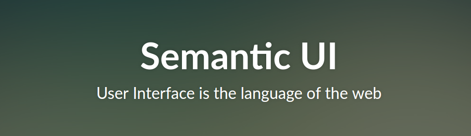

Is Semantic UI suitable for your project?
More than a year ago, we decided to use Semantic UI at Codility as the framework that will help us build nice user interfaces faster.
Initially, we often had to discover how to do things Semantic-way, but perhaps it also applies to any other framework. Switching from what we had previously was a bit difficult, but we were happy with the outcome, as having a library such as this one saves a lot of time both in the UX team and in the dev team. In particular, moving the definition of how things look to HTML (via a large number of CSS classes) versus writing large amounts of CSS is certainly much more maintainable and it’s a big deal in the large code base such as ours. If you are starting a new project you won’t have the problems with conversion that we had.
One of the most important things that we changed in the configuration is the number of grid columns, which was 16 by default. 12 columns are certainly a much better choice, because they give you much more freedom - there were things we just couldn’t implement with the default value, like for instance the responsive footer that has 6 segments. I would highly recommend switching to 12 columns before you start working with grids.
If you can use any of the standard themes it will be certainly easier than customizing it; however, it seems that designers always want to change something :) Customizations are usually added to special files in your theme (namely, theme.variables and theme.overrides) and after any change you have to recompile Semantic; this doesn’t fit very well into out development cycle, because we didn’t want to add it as yet another step that happens during the deployment (or even local server run), so we ended up committing the compiled sources into our repository. Fortunately, now we don’t need to modify it very often.
It’s a relatively young library so sometimes you can run into bugs (mostly with behaviour implemented in JS, the CSS part rather works well) or things which are not very well documented. This was the most painful when we were trying to develop Semantic-based things in React. Basically, we’ve found out that trying to synchronise the UI with internal React/Redux states is not a good option. However, since then, the Semantic-UI-React official library was created which is really awesome and totally jQuery-free (we would love to get rid of jQuery in the long run), although some features like animations are not yet implemented.
There is only one bad thing about the CSS, sometimes (but probably rarely) you will want to override some styles and then you won’t get away without long selectors and even !important. However, over time we learned that it’s not as bad as it looks.
The alternative that we considered was using Bootstrap. The main reason was that with Bootstrap we would look like half of the Internet so we wanted something that looks nicer. Although sometimes we regretted not choosing it, for now we are definitely sticking to Semantic, in particular now when Semantic-UI-React is available, actively developed and we are doing more and more things in React/Redux.
Comments
Comments powered by Disqus